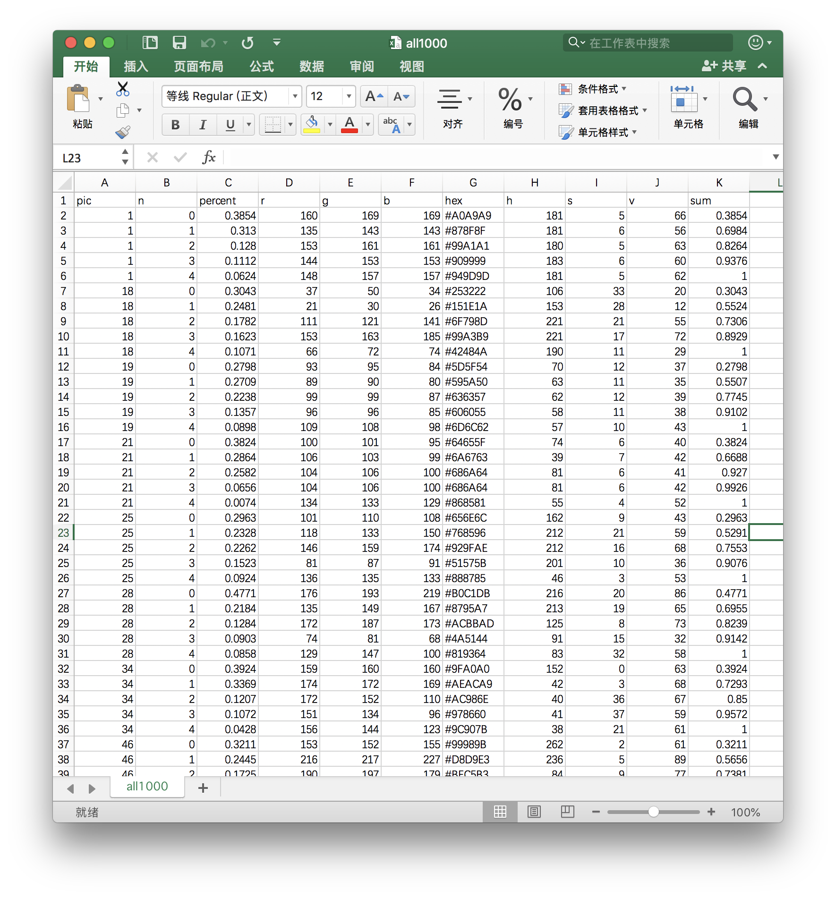
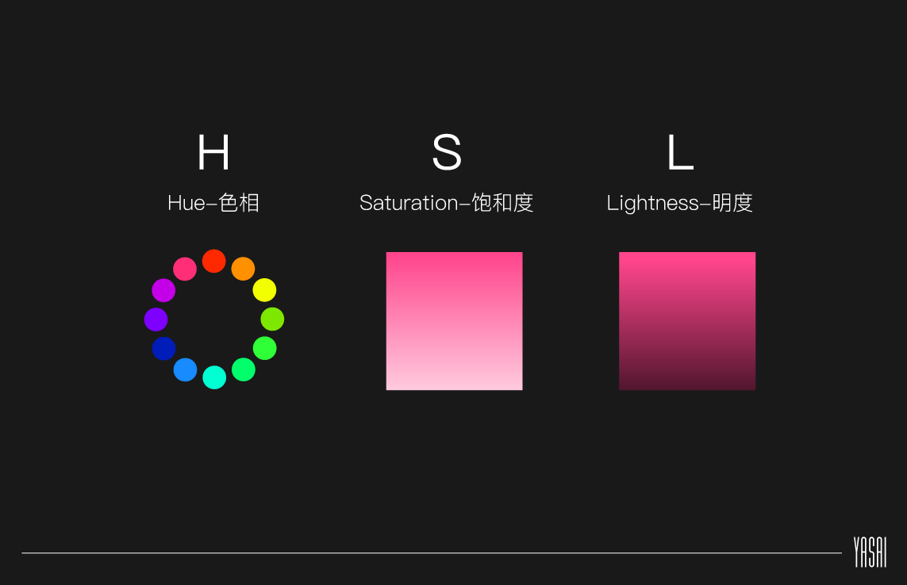
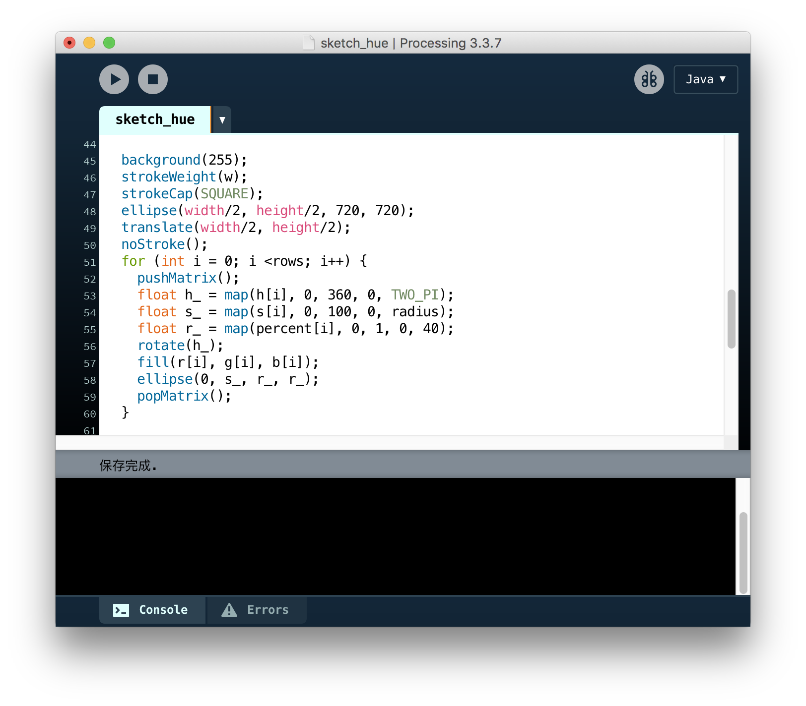
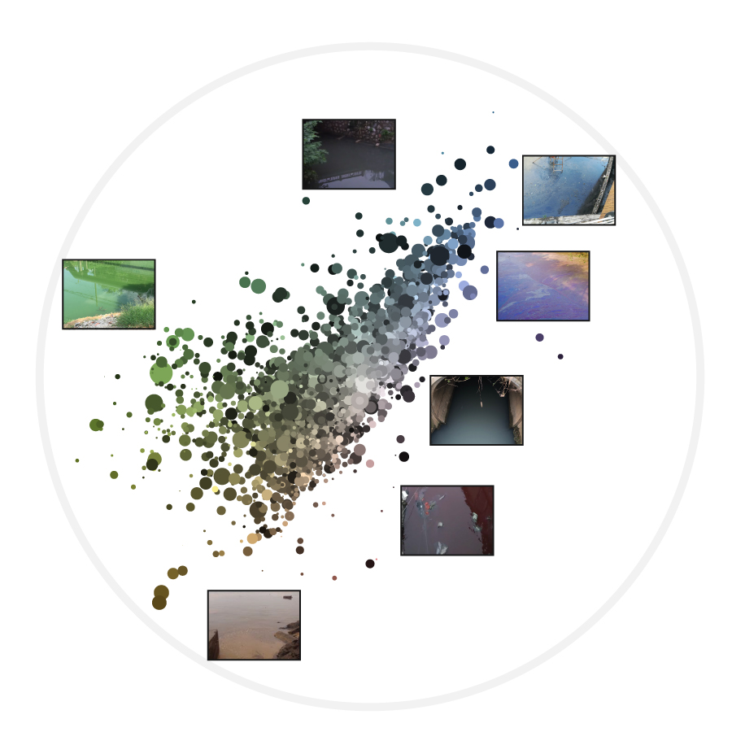

在全国城市黑臭水体整治监管平台，同事收集了3000多张黑臭水体照片，当我的同时把这些图片给我看的时候，我真的要犯呕了……太过分了，居然让设计师面对这堆闹心的图片！！！我当然不会直接用图片，我们要把图片的水体的颜色分析出来，纯取色？不现实！
1⃣截取水的部分，用python快速截取照片中水的主要部分，最后选取1000张主要是水的照片。
2⃣通过 IMAGE COLOR SUMMARIZER这个工具分析出每张图上的颜色分布,整理出一个关于每张图上水的主要五种颜色比例
3⃣整理分析出来每张图片的数据
4⃣用processing制作最后的效果
在我用到的分析工具中，可以获得RGB、HSL、Hex、CMYB、Lab五种色彩模型。这里选用了采用HSL。
其中，H（Hue-色相）有360度，所以我把它每一种色相映射到圆盘上，S（Saturation-饱和度）为距离圆心的距离，至于圆的大小取决于它所占图片的比例。
 最后再选取部分水体照片放在色系相近的圆圈旁边，这样颜色和水体就直接可以联系起来了～